对设备版本 V6.4 的 DXR2 设备进行重新分区
最新设备版本（V7.0）的固件较大，无法再加载到具有旧固件的现有DXR2设备中。因此，所有 DXR2 设备必须重新分区，以便可以使用最新的固件。这需要几个步骤，并且每个设备需要几分钟的时间。大多数操作都可以通过批量操作来执行，这大大减少了项目所需的时间。

对于现有的DXR2，不需要更新到更高的固件版本（包括设备类型版本的升级），只要它们保持在原来的范围内（例如，不需要新的特性或功能或文本）。
IP connection for DXR2.E devices
通过 IP 连接，所选的 DXR2.E 设备将被并行处理。因此，20 台设备大约需要 20 分钟。不建议选择超过20个设备。
Connecting via an Ethernet/IP network
MS/TP connection for DXR2.M devices
MS/TP 的 DXR2.M 设备需要的时间是 IP 设备的数倍。这是 MS/TP 通信速度慢、数据量大以及设备顺序处理的结果。建议在夜间或周末运行重新分区任务。对于一台设备，该过程大约需要 3.5 小时。我们建议在对 DXR2.M 设备重新分区之前在办公室执行测试。
Connecting via an Ethernet/IP network
USB connection for DXR2.M devices
如果可以将 DXR2M 设备直接连接到计算机，请使用此连接类型而不是 MS/TP 连接。每个设备的重新分区过程大约需要 15 分钟。
Connecting via USB port
对于关键部署（例如服务器机房），必须提前与客户安排该过程。
DXR2.E | DXR2.M |
|---|---|
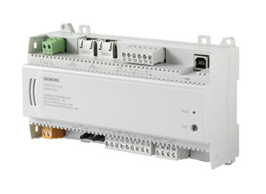 | 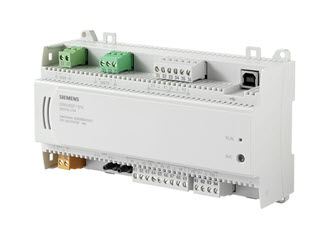 |
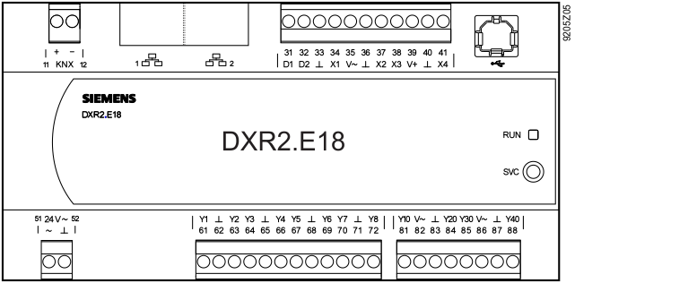 | 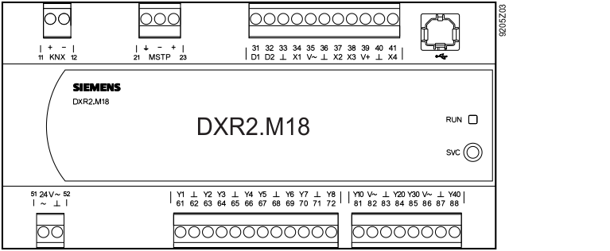 |
当选择多台设备进行下载和/or上传时，一台或多台设备可能会因网络状况（例如网络流量过大）而导致加载失败。在这些情况下，请选择加载失败的设备并重复 download/upload 命令。
1. Check the installed root file system version
- The DXR2 devices are connected and operational.
Connecting to devices
- Go to Startup.
- Open the Configure and download task.
- Select the Engineered devices tab.
- In the Discovered devices tab, click Discover and select a Discovery filter(All or Locally connected device)from the drop-down list.
- Click OK.
- All locally connected devices on the selected network display in the Discovered devices table.
- In the Discovered devices tab, select a device.
- In the Details pane, select the System tab. This check must be performed manually for each device.
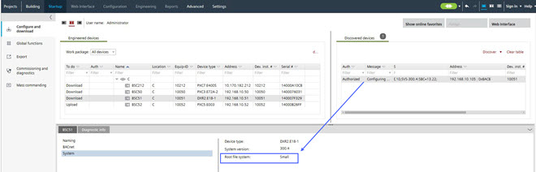
- The device information appears:
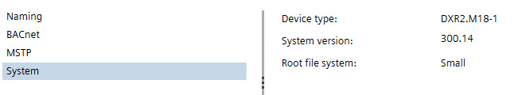
- Device type: DXR2.x
- Firmware version: Lower than Desigo firmware library version FW_V7.0_DXR2_V01.21.152… -> Repartition required
- Root file system: Small -> Repartition required
2. Read back data
- The devices are connected.
Connecting to devices - The root file system is small.
- Go to Startup.
- Open the Configure and download task.
- Select the Engineered devices tab.
- Select a hierarchy folder (for example, Floor).
Note: The maximum of multi-selected devices should not be more than 20 devices. - Right-click the hierarchy folder and select Upload.
- The devices runtime instance data is uploaded to the project.
- Click the Log tab to check the upload status.
3. Repartition of the firmware memory
- The required repartition firmware is integrated into ABT Site and cannot be manually selected at later time.
- This step will take with:
- IP connection for 20 devices about 15 - 30 minutes
- MS/TP connection for 1 device about 3 hours and 30 minutes
- USB connection for 1 device about 15 – 20 minutes
- Select the Engineered devices tab.
- Select a hierarchy folder (for example, Floor).
Note:
- The maximum number of multi-selected devices should not exceed 20.
- DXR2 devices that already have the large root file system loaded will be skipped. - Right-click the hierarchy folder and select Repartition device.
- A Confirmation dialog opens.
Note:
Carefully read the confirmation information before proceeding. If there is a power failure during the repartitioning period, the devices can be damaged and must be replaced.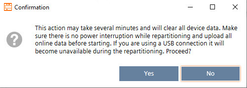
- Click Yes.
- Click the Log tab to check the progress of loading the repartitioner.
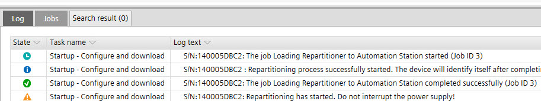
- When the download is finished, the Repartitioning has started on device dialog opens.
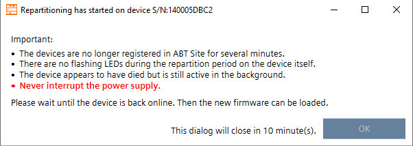
Important:
- The devices are no longer registered in ABT Site for several minutes.
- There are no flashing LEDs during the repartition period on the device itself.
- The device appears to have died but is still active in the background.
- Never interrupt the power supply.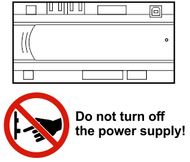
- Click OK.
- (Optional USB): From this point on, ABT Site can be disconnected from the device.
Notice: If the power supply is interrupted during this time, the device will be destroyed. - (Optional USB): Connect at later time when LEDs are flashing again.
- Wait till the device is visible in the Discovered devices tab.
- In the Device type column, the device type changes from DXR2.E18-1 to DXR2.E18-1X. The X in the device type indicates that the root file system is changed to large root file system and is ready for the update of the new firmware.
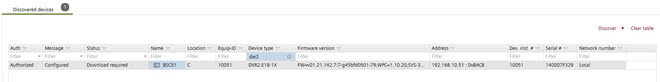
- Note: The repartition firmware is not operational for the control program, a firmware update with a production firmware is needed (see next step).
4. Update firmware from library
- Update files Desigo firmware library (FW_V7.0_DXR2_V01.21.152… or higher) are available on the computer.
- Select the Discovered devices tab.
- In the Device type column, filter for the DXR2 devices.
- Select all DXR2 devices with an extension X in the Device type name.
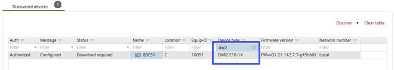
- Right-click the selected devices and select Firmware.
- Select the Library tab or Browse to a local folder.
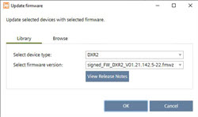
- Select the device type and the (Desigo firmware library version FW_V7.0_DXR2_V01.21.152… or higher) from the corresponding drop-down list.
Update firmware from file - (Optional) Click View Release Notes for more information about the selected firmware version.
- Click OK.
- The device firmware is updated. The update process might take a while. Wait for the device to restart.
- Click the Log tab to check the status of the firmware upload.
5. Full download
- Select the Engineered devices tab.
- Select a hierarchy folder (for example, Floor).
- Right-click the selected folder and select Load > Full (device may restart).
- The control program is loaded and operational.
- Click the Log tab to check the status of the full download.
- Check the functionality of the control program in the DXR2 devices.